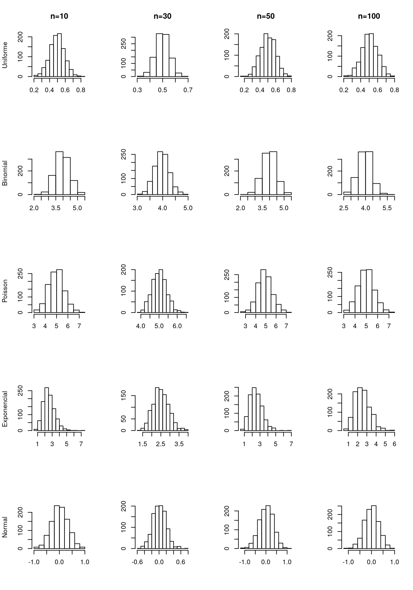

|
Noções de Probabilidade e Estatística
|
Parte 6.1 - Inferência
Conceitos iniciais e estimadores pontuais
1 Inferência
A Inferência é o ramo da Estatística que objetiva estudar a população através de evidências fornecidas por uma amostra. Em outros termos, as técnicas de inferência permitem fazer afirmações sobre quantidades populacionais através de um subconjunto da população.
É interessante observar que o objetivo da amostragem é gerar um subconjunto que seja representativo em relação a população, contudo é intuitivo notar que, caso se repita o processo de amostragem, uma amostra diferente da inicial será obtida e, consequentemente, as medidas de interesse calculadas (média, variância, etc.) em diferentes amostras não serão iguais, pois os elementos pertencentes à amostra serão diferentes.
Isto quer dizer que mesmo o procedimento de amostragem estando correto sempre haverá aleatoriedade envolvida, contudo, objetivamos que diferentes amostras nos cedam respostas próximas ao valor que seria observado caso tivéssemos a população toda em mãos.
Por exemplo, considere que estamos interessados em saber a altura média dos indivíduos do sexo masculino em uma região. Para saber a média exata teríamos que coletar a informação de TODOS os homens da região e obter a média. Na prática tal tarefa é inviável, então tomamos uma amostra de indivíduos do sexo masculido, obtemos a média para esta amostra e este valor é o nosso candidato à medida de interesse na população. Outra amostra, coletada da mesma maneira, nos forneceria outro valor, o que torna a medida dependente da amostra e, portanto, aleatória.
Devido à natureza aleatória, todas as quantidades associadas à amostra devem receber tratamento probabilístico. Uma certa característica de interesse na população é representada por uma variável aleatória \(X\), da qual retira-se uma amostra (\(X_1,X_2,...,X_n\)) de tamanho \(n\).
Consideraremos que as amostras foram obtidas de modo a garantir que os elementos sejam independentes e tenham todos a mesma distribuição de probabilidade da variável \(X\).
2 Conceito formal
Seja \(X\) uma variável aleatória com função de probabilidade ou densidade de probabilidade denotada por \(f(x, \theta)\), em que \(\theta\) é um parâmetro desconhecido, chamamos de inferência estatística o problema que consiste em especificar um ou mais valores para \(\theta\), baseado em um conjunto de valores \(X\).
Uma sequência \(X_{1},...,X_{n}\) de \(n\) variáveis aleatórias independentes e identicamente distribuídas (\(i.i.d\)) com função de probabilidade ou densidade de probabilidade \(f(x, \theta)\) é uma amostra aleatória de tamanho \(n\) da distribuição de \(X\), quando \(n>1\) a conjunta consiste no produtório das \(f(x_{i}, \theta)\) individuais.
O objetivo das técnicas de inferência é estudar uma quantidade populacional \(\theta\) desconhecida, pois so temos uma amostra da população, por meio de estimativas pontuais e intervalares.
A inferência estatística se divide em 3 ramos: estimação pontual, estimação intervalar e teste de hipótesses.
2.1 Estimação pontual
A ideia consiste em utilizar a informação amostral para obter valores candidatos para a quantidade que seria observada na população. Deve-se garantir que estes candidatos vão refletir a realidade. Ou seja, as técnicas de estimação pontual fornecem um único valor numérico para uma quantidade que desejamos saber na população.
2.2 Estimação intervalar
Como já discutido, diferentes amostras podem gerar diferentes resultados, o que dá um caráter aleatório a todas as medidas provenientes da amostra. Neste sentido, o objetivo da estimação intervalar é fornecer um intervalo de valores “plausíveis” para o parâmetro de interesse de forma que haja uma confiabilidade de que o real valor do parâmetro que seria observado caso tivéssemos toda a população em mãos está no intervalo.
2.3 Teste de hipóteses
Consiste em testar uma hipótese sobre um parâmetro populacional. Uma hipótese é uma afirmativa sobre uma propriedade da população enquanto que um teste de hipótese é um procedimento para se testar esta afirmativa.
3 Parâmetros, Estimadores e Estimativas
Alguns conceitos importantes são:
Parâmetro: é uma medida numérica que descreve alguma característica da população, na maior parte dos casos são desconhecidos e usualmente representados por letras gregas e genericamente representado por \(\theta\).
Espaço paramétrico: O conjunto em que \(\theta\) pode assumir seus valores.
Estimador: a combinação de elementos da amostra, construída com a finalidade de representar, ou estimar, um parâmetro na população. Denotamos os estimadores por símbolos com acento circunflexo. Os valores numéricos assumidos pelos estimadores são chamados estimativas ou estatísticas. Como se tratam de funções da amostra, e diferentes amostras geram diferentes estimativas, estas quantidades são tratadas como variáveis aleatórias. As estimativas podem ser pontuais ou intervalares:
Estimativa pontual: fornecem como estimativa um único valor numérico para o parâmetro de interesse.
Estimativa intervalar: fornece um intervalo de valores “plausíveis” para o parâmetro de interesse.
4 Propriedades dos estimadores
Quando a amostragem é feita a partir de uma população descrita por uma função \(f(x, \theta)\), o conhecimento de \(\theta\) a partir da amostra, gera todo o conhecimento sobre a população. Além disso, mais de uma função da amostra pode ser proposta para estimar o parâmetro de interesse. Dessa forma, é natural que se procure um método para se achar o melhor estimador para \(\theta\).
O que nos leva às propriedades dos estimadores. Um bom estimador é: não viciado, consistente e eficiente.
4.1 Vício
Um estimador \(\hat{\theta}\) é não viciado ou não viesado para um parâmetro \(\theta\) se seu valor esperado coincide com o parâmetro de interesse, isto é: \(E(\hat{\theta}) = \theta\).
Independente do tamanho amostral esta propriedade deve ser válida.
4.2 Consistência
Um estimador \(\hat{\theta}\) é consistente, se, à medida que aumenta-se o tamanho amostral, o valor esperado converge para o parâmetro de interesse e a variância converge para 0, isto é:
\(\underset{n \to \infty}{lim} E(\hat{\theta}) = \theta.\)
\(\underset{n \to \infty}{lim} Var(\hat{\theta}) = 0.\)
Note como o conceito de consistência está diretamente ligado ao tamanho amostral, diferentemente do conceito de vício.
4.3 Eficiência
Dados dois estimadores \(\hat{\theta_1}\) e \(\hat{\theta_2}\), ambos não viciados para um parâmetro \(\theta\), dizemos que \(\hat{\theta_1}\) é mais eficiente que \(\hat{\theta_2}\) se \(Var(\hat{\theta_1}) < Var(\hat{\theta_1})\), ou seja, quanto menor a variância, maior a eficiência.
5 Principais estimadores pontuais
Na prática algumas quantidades são mais frequentes em problemas que envolvem inferência e, por esta razão, seus estimadores e propriedades são conhecidos e bem definidos. Os principais são: a média, a proporção e a variância.
5.1 Média
O parâmetro populacional de média é usualmente denotado por \(\mu\). O estimador, denotado por \(\bar{X}\) é dado pela soma dos elementos dividido pelo tamanho amostral, ou seja,
\[\bar{X} = \frac{X_1+X_2+...+X_n}{n}.\]
O estimador para a média é não viciado e consistente.
5.2 Proporção
Para a proporção observada na população, cujo parâmetro é denotado por \(p\), um estimador, denotado por \(\hat{p}\) consiste na frequência amostral dividido pelo número de elementos, ou seja,
\[\hat{p} = \frac{freq. \ amostral}{n}.\]
O estimador para a proporção é não viciado e consistente.
5.3 Variância
Para a variância, denotada por \(\sigma^2\), dois candidatos a estimadores destacam-se, são eles:
- \(S^2 = \frac{1}{n-1} \left ( \sum_{i=1}^n X_i^2-n \bar{X}^2 \right )\)
- \(\hat{\sigma}^2 = \frac{1}{n} \left ( \sum_{i=1}^n X_i-\bar{X} \right )^2\)
O estimador dado por \(S^2\) é não viciado e consistente, enquanto \(\hat{\sigma}^2\) é viciado e consistente.
6 Distribuições amostrais
Quando uma amostra \(X_{1},...,X_{n}\) é obtida, geralmente estamos interessados em um resumo destes valores, que pode ser expresso por uma estatística. E esta estatística é também uma variável aleatória, isto quer dizer que possui uma distribuição de probabilidade chamada distribuição amostral.
Graças a esta distribuição podemos, além das estimativas pontuais, obter uma medida de precisão do valor obtido chamada estimativa intervalar ou intervalo de confiança.
7 Teorema Central do Limite
O Teorema Central do Limite (TCL) diz que para \(n\) grande, a distribuição da média amostral se comporta segundo um modelo Normal. Se padronizarmos a média, a distribuição se comporta tal como uma Normal de média 0 e variância 1. Além disso, quanto maior o tamanho da amostra, melhor é a aproximação. O teorema permite que utilizemos a distribuição Normal sempre que tivermos interesse em estudar a média amostral independente da distribuição da variável aleatória que gerou esta média. Ou seja, a distribuição amostral da média amostral \(\bar{X}\):
\[\bar{X} \sim N\left ( \mu, \frac{\sigma^{2}}{n} \right )\]
Formalmente: Seja uma amostra de tamanho \(n\) retirada de uma população com média \(\mu\) e variância \(\sigma^2\). A amostra \(X_1,...,X_n\) consiste de \(n\) variávevis aleatórias independentes e com mesma distribuição. A média da amostra é denotada por \(\bar{X}\). Temos que:
\[\frac{\bar{X}-\mu}{\sigma/\sqrt{n}} \xrightarrow[n \to \infty]{em \ dist.} N(0,1).\]
Vamos verificar, através de um pequeno estudo de simulação, como o TCL é válido. Considerando as distribuições Uniforme, Binomial, Poisson, Exponencial e Normal foram geradas 1000 amostras em que variou-se o tamanho amostral. Para cada uma das amostras obteve-se a média e gerou-se o histograma. Note como os histogramas são simétricos, corroborando o que nos diz o TCL:

Uma aplicação importante do TCL relaciona-se com a distribuição da proporção amostral. A proporção é a fração dos indivíduos com a característica de interesse na amostra. Isto é, \(\hat{p} = \frac{individuos \ com \ a \ caracteristica}{n}\). Se considerarmos uma variável aleatória \(Y_i\) tal que
\[Y_i = \left\{\begin{matrix} 1, & se \ apresenta \ a \ característica \\ 0, & caso \ contrário \end{matrix}\right.\]
Podemos reescrever a proporção amostral como
\[\hat{p} = \frac{Y_1+Y_2+...+Y_n}{n}=\sum_{i=1}^n\frac{Y_i}{n}=\bar{Y}.\]
Logo, a proporção amostral nada mais é do que a média de variáveis aleatórias convenientemente definidas de tal forma que \(Y_1+Y_2+...+Y_n\) formam uma sequência de variáveis aleatórias independentes seguindo distribuição de Bernoulli. Portanto tem média igual a \(p\) e variância igual a \(p(1-p)\).
Logo, pelo TCL, temos que:
\[\frac{\bar{Y}-E(\bar{Y})}{Var(\bar{Y})}=\frac{\hat{p}-p}{\sqrt{p(1-p)/n}} \xrightarrow[n \to \infty]{em \ dist.} N(0,1)\]
Críticas e sugestões a este material sempre serão bem vindas.
Para entrar em contato comigo, envie uma mensagem para lineuacf@gmail.com.